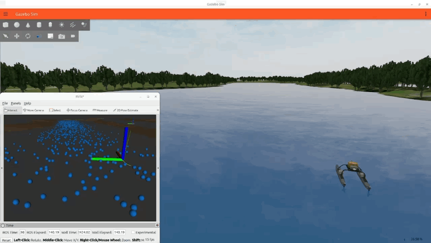

Project Overview
H-SPAR is a research-driven simulation and planning framework for particle transport and autonomous robots in hydrodynamic environments. The goal is to integrate environmental flow modeling with robotic decision-making so autonomous systems can operate more effectively under real-world marine dynamics.
My contribution focused on building the core modeling and planning logic, connecting the physical flow behavior with robot motion and autonomy decisions in complex conditions.